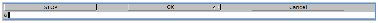
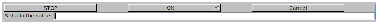
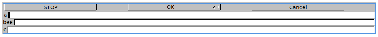
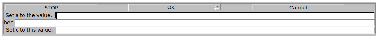
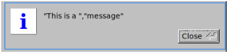
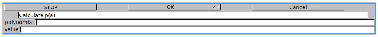

12.2.2 Input: input Input InputStr textinput output Output
The input command prompts the user for the value of a variable.
Input is a synonym for input.
-
input takes an unspecified number of commands:
vars, a sequence of variable names, each one optionally
preceded by a string.
- input(vars) brings up a box where
the user can enter a value for each variable.
If a variable is preceded with a string, then that string will be
the prompt for the variable, otherwise the variable name will be the
prompt.
Examples.
-
Input:
input(a)
Output:

- Input:
input("Set a to the value: ",a)
Output:

- Input:
input(a,bee,c)
Output:

- Input:
input("Set a to the value: ",a,bee,"Set c to this value: ",c)
Output:

If the value that you enter for input is a string, it should
be between quotes. If you want the user to enter a string without
having to use the quotes, you can use the InputStr command,
which is just like input except that it will assume any input
is a string and so the user won’t need to use quotes.
textinput is a synonym for InputStr.
The output command creates message windows:
Output is a synonym for output.
-
output takes one argument:
strs, a sequence of strings or variables which represent
strings.
- output(strs) creates a message
window displaying the concatentation of the strings.
Example.
Input:
| s := "message" |
| output("This is a ",s)
|
Output:

You can use output to add
information to the input window.
Example.
Input:
input(output("Calculate p(a)"),"polynomial",p,"value",a)
Output:
